Independent Minecraft Studio
Blocky worlds,
juicy ideas.
Grape Games makes original Minecraft: Bedrock Edition add-ons and worlds: companions, monsters, tower defense, and hand-built places to explore.
Portfolio
Our current Bedrock projects. All screenshots are in-game captures.
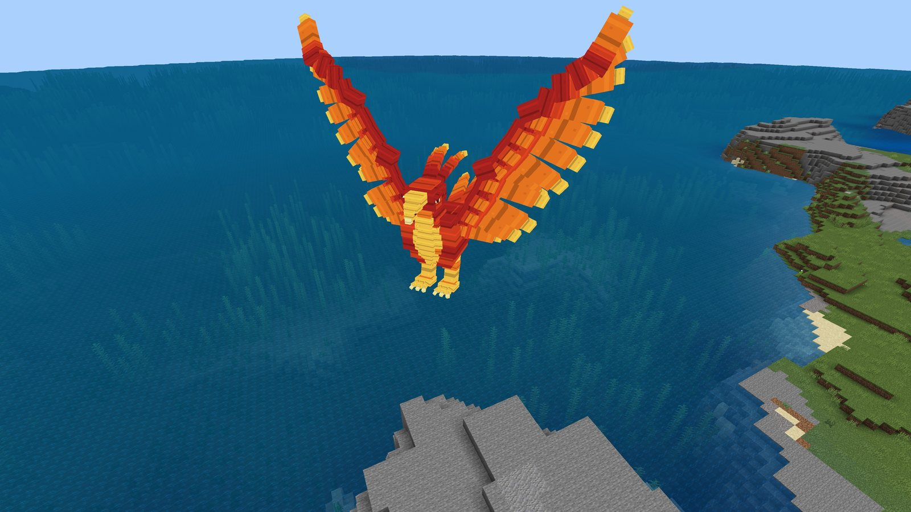
Campfire Phoenix
A tameable fire-resistant Phoenix companion that hatches from campfires, fuels your furnaces and rises again from its ashes.
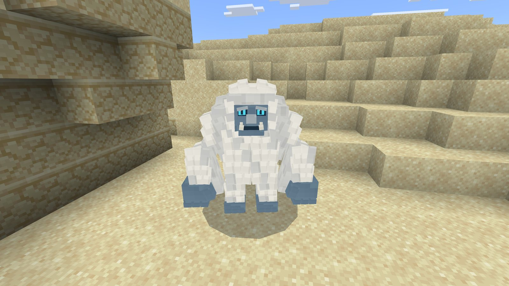
Fortified Frontiers
A monster-hunting adventure with bounties, regional story chains, lair sites, armor sets and an illustrated field guide.
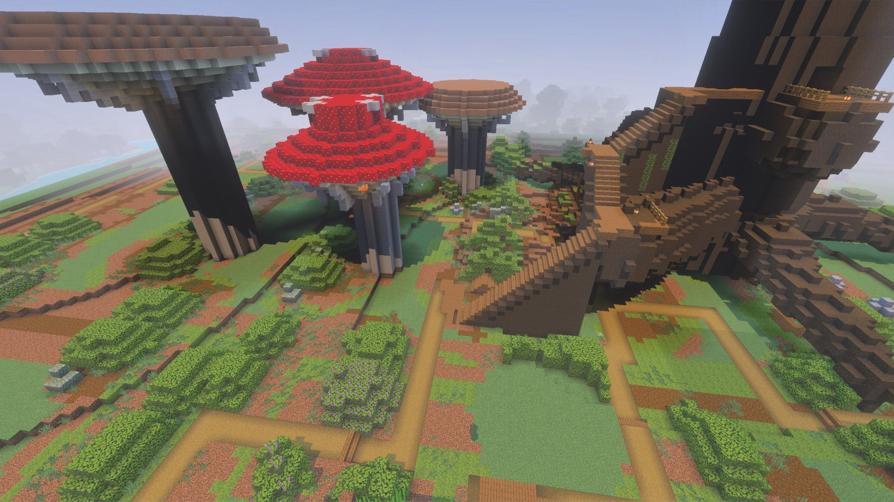
Giant's Abandoned Garden
Shrink down and explore a giant's overgrown garden of towering mushrooms, ancient roots and flowerpot cottages.
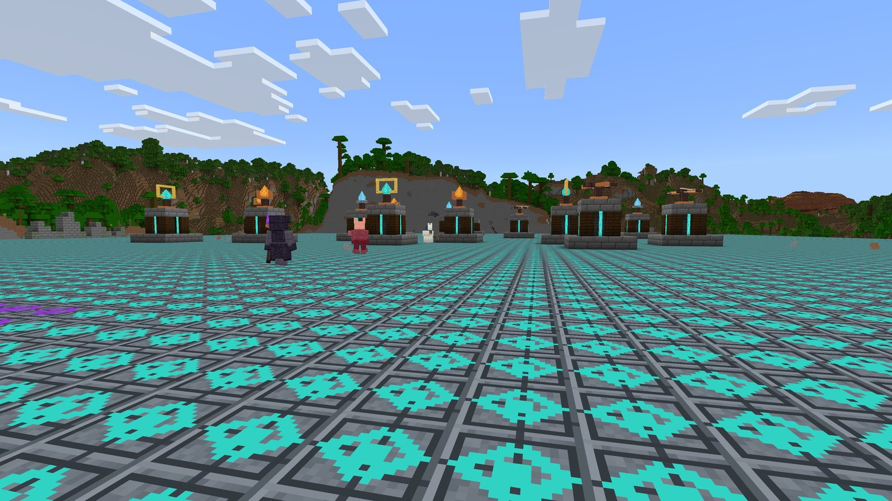
Relic Siege
Co-op tower defense: guard a shared Relic with four tower families against waves of mobs.

Gold Golem Logistics
Upgrade copper golems into Gold Golems that physically walk your items between Gold Chests.
Campfire Phoenix
Break a campfire and you might release a Phoenix. Tame it with charcoal, and your new companion follows you, defends you with flame bolts, and keeps your furnaces fed with Phoenix Feathers. If it falls, it leaves Phoenix Ashes behind. Light them, and your Phoenix returns with its name and owner intact.
- Tameable Phoenix that sits, follows, can be named and leashed, and defends its owner
- Phoenix Feathers: furnace fuel supplied by a Phoenix sitting near a furnace, blast furnace or smoker
- Phoenix Ashes revive a fallen Phoenix with its name and owner
- Four-page in-game guide, delivered to each player
- No experimental toggles required
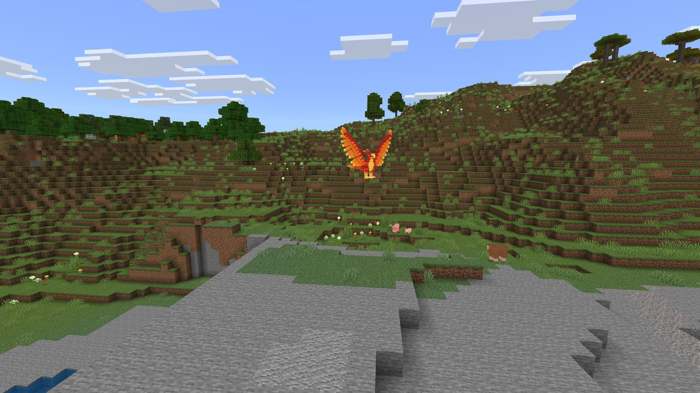
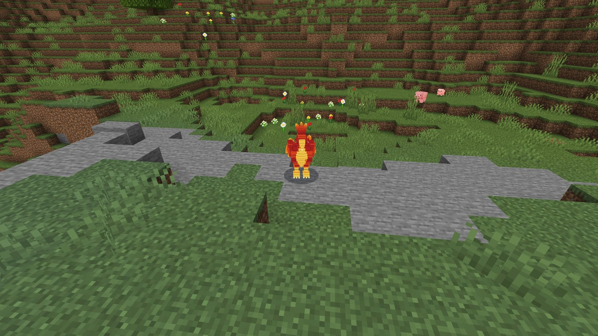
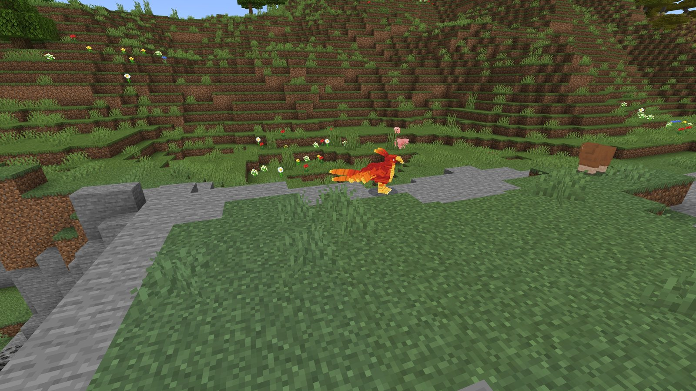
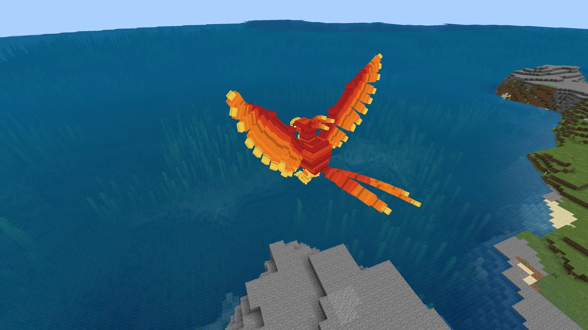
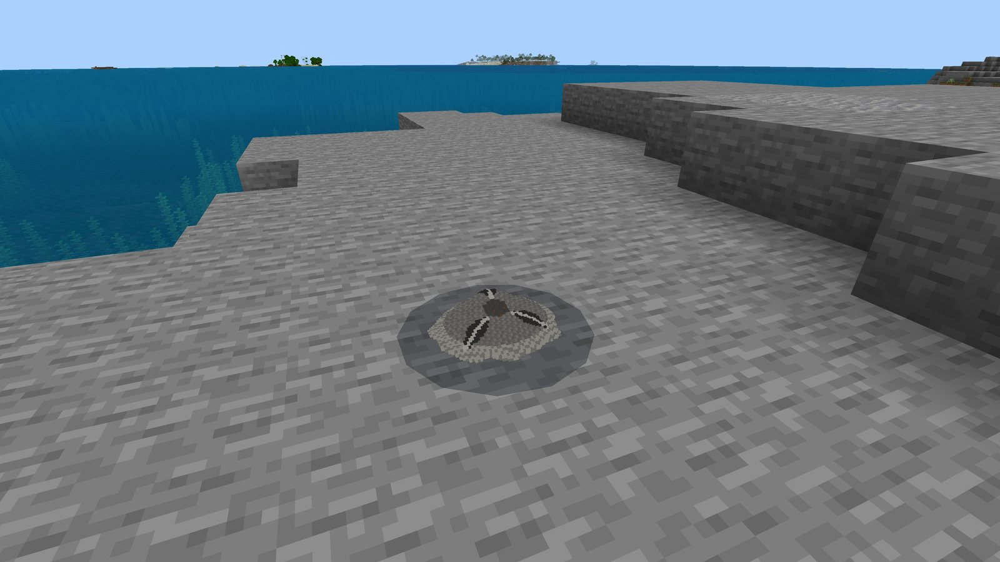
Fortified Frontiers
Take bounties from a Bounty Board, track monsters across five frontiers, and earn armor sets with their own powers. Each region has a three-stage story: recover a relic, hunt a weaker beast, then take on a strong monster in its lair. The Frontier Map and a 16-page illustrated field guide keep you on track.
- Ten new expansion monsters alongside the original ten
- Five regions (Enchanted Forest, Haunted Moor, Ember Crags, Shattered Coast, Starfall Steppe), each with a lair site and a three-stage story
- Five four-piece armor sets with full-set abilities
- Bounty Boards, Quartermasters and Captains as quest hubs, plus a Frontier Map
- Sixteen-page illustrated Frontier Field Guide
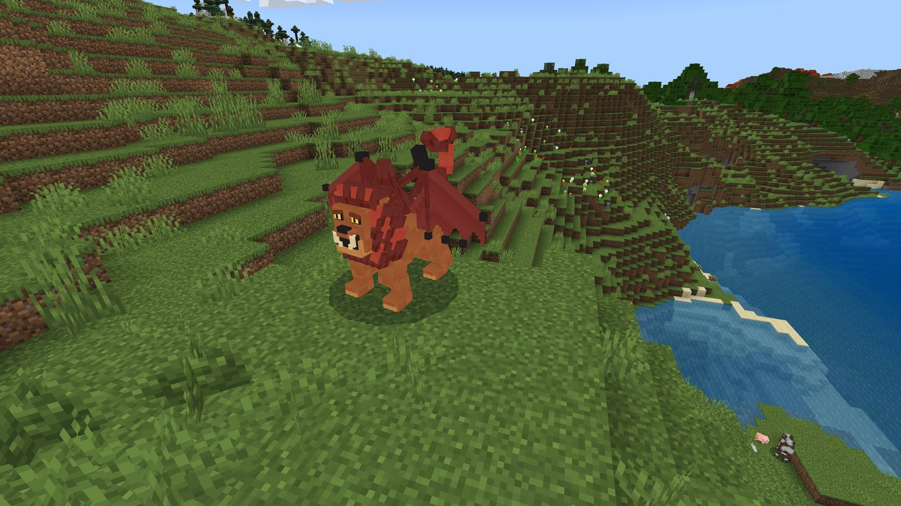
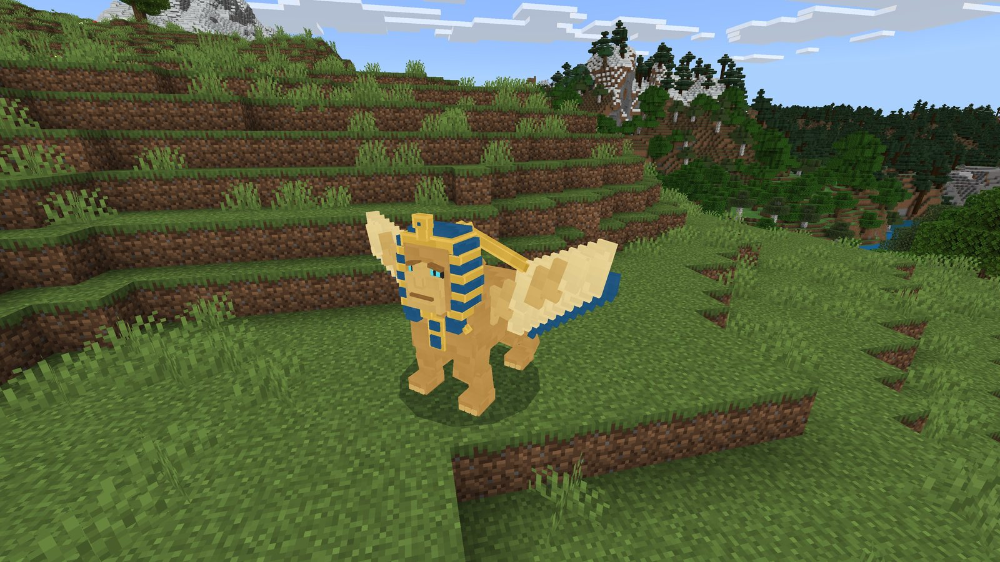
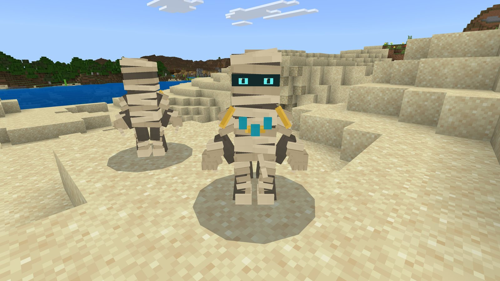
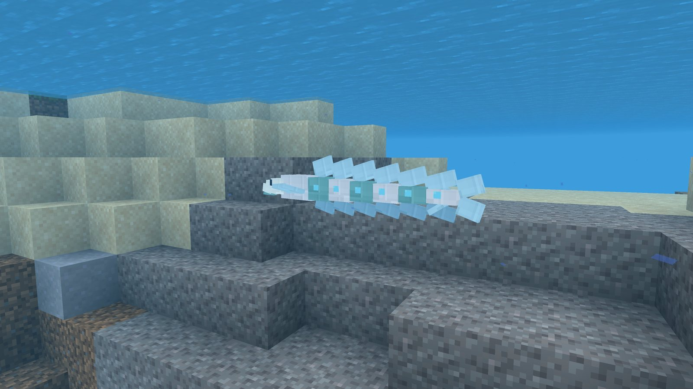
Giant's Abandoned Garden
A giant once tended this garden. Now it has grown wild, and you're small enough to get lost in it. Walk beneath giant mushrooms, climb the stairway into an enormous tree, and discover cottages built inside a giant flowerpot.
- Grove of five giant mushrooms
- Three cottages inside a giant flowerpot
- Lookouts and stairways in the roots of an ancient tree
- A pond with lily pads, plus a giant garden spade
- Built entirely from vanilla blocks, no packs required
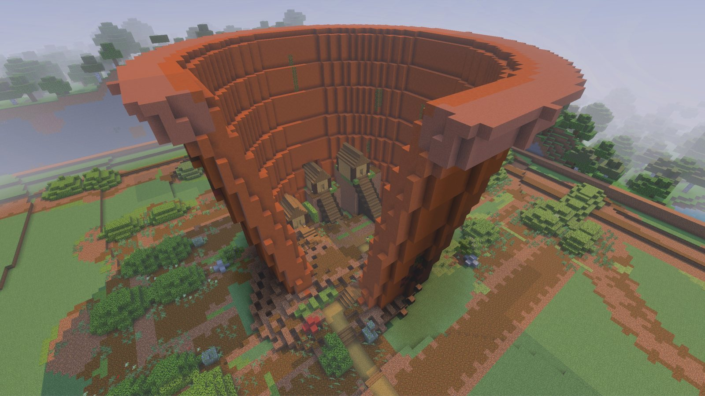
Relic Siege
Protect the Relic at the heart of a fortified arena. Craft tower cores, place and upgrade towers, build maze defenses, then start each wave when your team is ready. Every cleared wave fills a shared chest with materials for the next fight.
- Four tower families: Ballista, Ember Spire, Frost Obelisk and Ward Beacon
- Three tower tiers with growing footprints, up to 64 towers per arena
- Manually started waves with shared rewards
- Prepared Ruined Fortress Island world, or raise an arena in any world
- In-game Guidebook with field tools
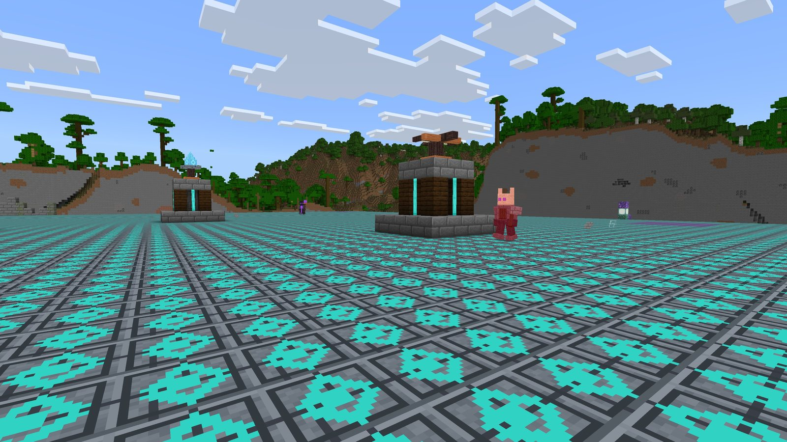
Gold Golem Logistics
Logistics you can watch. Upgrade a copper golem into a Gold Golem, set a request on a Gold Chest, and your golem walks the items over from your supply chests. There's no teleporting: every delivery is a golem carrying a crate across your base.
- Gold Chests: 27-slot containers. Put one item in the first slot to request it; leave it empty to make the chest a supplier.
- Gold Upgrade: turns a copper golem into a Gold Golem that serves chests around its home.
- Logistics Ledger: sets a golem's range (16–64 blocks) and each chest's request size.
- Illustrated guidebook with text and picture views.
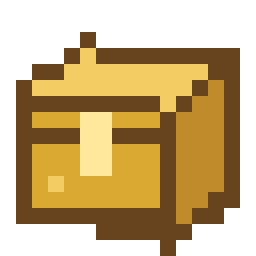
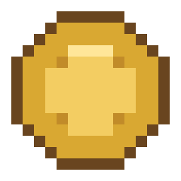
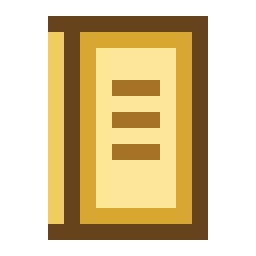
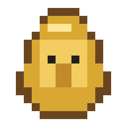
Guidebook pages (in-game)


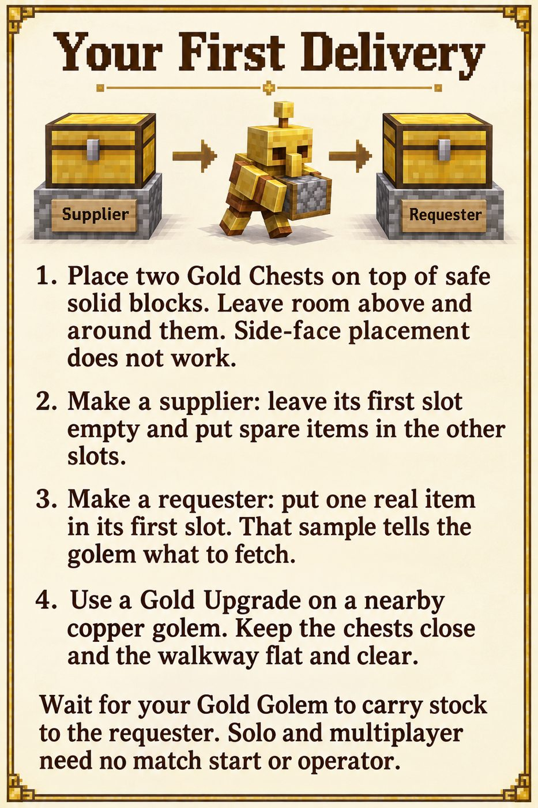
Also in development
More Bedrock projects in our pipeline.
Battlecraft
A real-time strategy prototype: lead a Villager, Pillager, Undead or Orc army on a 512×512 battlefield.
Elemental Pilgrimage
A survival add-on with four elemental paths, learnable techniques, fusions, guardians and a finale boss.
Kindred Villages
Villages for eight cultures, including halflings, dwarves, elves, catfolk and mermaids.
Lane Siege
Three-lane Red-versus-Blue siege matches.
Echoes of the Six Seals
An exploration adventure: follow route charts and glyph markers between caches to find six seals.
For publishers
We build Marketplace-ready content and take it from concept to a tested release. Here's what a partner gets from us.
Packaged builds
.mcaddon, .mcpack and prepared .mcworld builds with versioned packs, unique identifiers and SHA-256 checksums.
Testing
Automated test suites, Bedrock Dedicated Server runs and hands-on client testing, with written QA records.
Player onboarding
Our add-ons include an in-game guidebook delivered to each player.
How we work
- PlanA written design and implementation plan for each project.
- BuildModels, textures, scripts and worlds for each project.
- ValidatePack checks, unit tests and dedicated-server runs.
- Play-testHands-on testing in the Bedrock client, with a record of what was checked.
- ReleasePackaged builds and store assets, ready for publisher review.
About Grape Games
Grape Games is a small, independent studio making Minecraft: Bedrock Edition content. We build companions, monsters, game modes and explorable worlds, and we test them on real Bedrock servers and clients.
Our featured add-ons need no experimental toggles, and all our content follows the Minecraft Usage Guidelines.
- EditionBedrock
- We makeAdd-ons & worlds
- Projects10 in development
- Contactgrapegames3141@gmail.com
Contact
Publishers, partners and players: we'd love to hear from you.